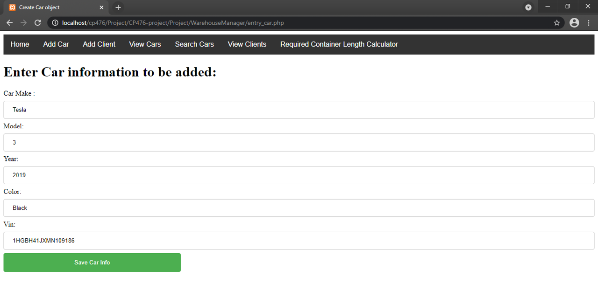
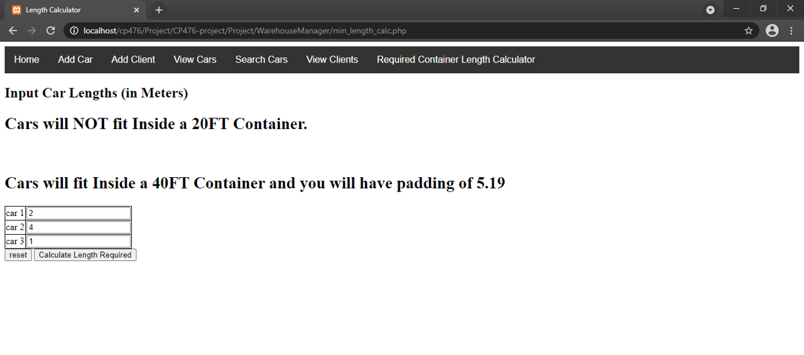

For client side we used HTML and CSS with javascript for the container length calculator.
For navbar we used JS mad included in every page.
Login Page
Add ClientsClient Added Succesfully
P2.2 Server side CGI components
For server side we used PHP to connect to Database and convey information to the user.
We also used session variables with PHP to control user login and only allow authorized access to the other pages.
Session
P2.3 Database tier design, data, usage
For the database we used MySQL and we used PHPMyAdmin to create and import databases and create user login accounts. For the database design we designed tables for clients and cars.
clients table
id
name
address
phone number
cars table
id
vin
make
model
year
colour
users table
username
password
View Cars
P2.4 New features and tools
For new tools and features we implemented a search function for the cars database and a minimum container length required calculator.
Search
Container Length required calculator
P2.5 Problem solving algorithms
For the the minimum container length required claculator, we can calculate the total length of cars that will be shipped, and we can compare with the size of the standard ISO containers. Using the results we can then tell the user if the containers will fit and the padding that will be available if it does fit.
Container length function
P2.6 Efficiency and robustness
For the UI we used simple HTML and some Javascript for the container calculator and navbar. The simplicity of the UI design enables the user to navigate with ease and less chance of error to occur.
For the Database we used simple SQL datatype constraints such that the user cannot enter invalid data into the database. We also made sure to use a universal db.php and include it whenever we use the database so that if it requires change it would only have to be edited in one file.